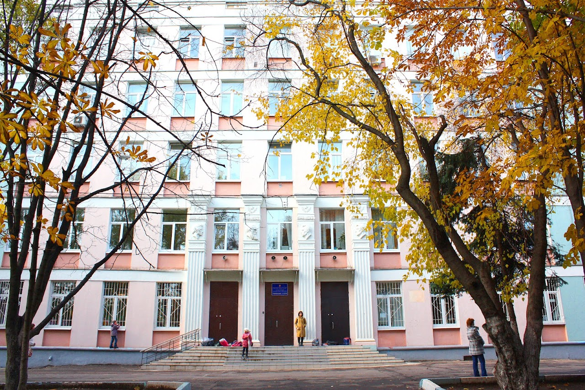

ГБОУ Школа № 1579

ГБОУ Школа № 1579 - осударственное бюджетное общеобразовательное учреждение города Москвы. Расположена в районе Москворечье-Сабурово Южного административного округа. Основана в 1964 году как школа № 579.

С 2004 года директором гимназии является Марина Феликсовна Кудинова.